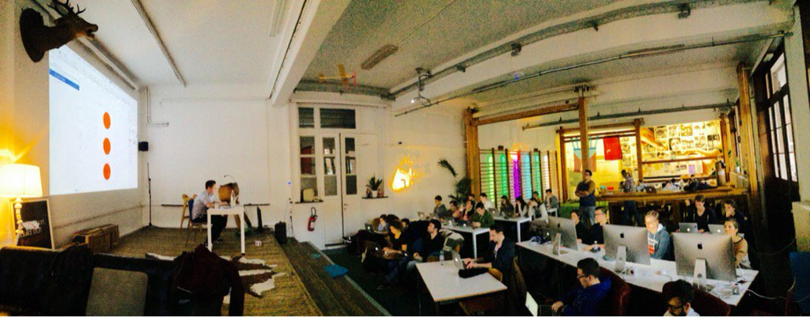

This is not a gym
De Creativity Gym is een creative ruimte die werd bedacht en ingericht door drie docenten uit de opleiding Interactive Multimedia Design aan de Thomas More hogeschool te Mechelen. Robby Vanelderen, David Heerinckx en Joris Hens besloten de koppen bij elkaar te steken om een leegstaande turnzaal om te bouwen tot de ultieme co-working space waar creatieve developers en designers samenkomen om te werken aan hun projecten.Inspiratie werd zeker en vast geput uit de kantoren van Google, Facebook en andere spelers in Silicon Valley. De Creativity Gym is overdag een werkplek (zeg maar kantoor) voor de studenten Interactive Multimedia Design, maar 's avonds gaan er op regelmatige basis workshops, meetups en andere events door.
Sara Barrera Riano - Kickass front-end developer
Waarom IMD en geen andere richting? Wel het feit dat het niet het typische meisjes richting is sprak me aan. Na het mdidelbaar was ik opzoek naar iets totaal nieuw en uitdagend. IMD paste perfect bij dit plaatje. Zonder enige design of development kennis stapte ik in het IMD bootje. Tot de dag van vandaag ben ik
dol enthousiast met mijn keuze. Ik kan me nu niets anders vorostellen dan programmeren en designen.
Kan je geloven dat ik dacht dat het technische aan deze opleiding te moeilijk ging zijn? En toch koos ik voor het technische traject in deze richting.
Lisa Smets - Veelzijdige web designer
"Ik heb IMD gekozen als perfecte aanvulling op mijn bachelor Communicatiemanagement. De combo design-development trok me over de streep. De real life opdrachten zorgen er voor dat IMD dicht bij de praktijk staat. De veelzijdigheid van de opleiding komt me in mijn job erg van pas want een IMD'er is in alle (online) werelden thuis."
Think tomorrow, het bedrijf waar lisa nu werkt omschrijft haar zo:
Met een diploma van zowel communicatie als interactief multimedia design is zij van alle werelden thuis. Wist je trouwens dat je dit tamelijk letterlijk mag nemen met een stage in Afrika.
Webtechnologie
Webtechnologie 1 is het vak waar je voor het eerst in aanraking komt met html, css en javascript. Het vormt de basis van de opleiding. Na dit eerste jaar voel je ook direct aan of je meer van code houdt of toch niet voor het technische aspect wil gaan. Bij programmeren draait alles rond probleemoplossend denken, dit ligt je of niet. Als je in het tweede jaar voor het keuzetraject development kiest, ga je verder met webtechnologie 2. Hier wordt het allemaal geavanceerder en krijg je verschillende gastlessen van externe bedrijven.

IMD café's
Om de zoveel tijd organiseren de docenten een IMD cafe. Je denkt waarschijnlijk direct aan tooghangen en pintjes drinken maar dit klopt niet helemaal :) Op een IMD cafe wordt elke editie een gastspreker en tal van alumni IMD'ers uitgenodigd. Deze gastspreker kan je vertellen over de nieuwste trends in webdesign, hoe je best een native app bouwt maar het kan ook zijn dat er een workshop wordt gegeven. Zo was er een tijdje geleden een workshop over Sketch, de wireframe en mock up tool. Na de lezing of workshop wordt er altijd tijd vrijgemaakt voor networking. Networking is zeer belangrijk in onze sector. Zo hebben al enkele IMD'ers stageplekken of jobs verkregen via deze weg.
Thais Lenglez - Dazzling designer
"Ik heb mij in den tijd ingeschreven vooral door mijn interesse voor grafisch ontwerp en het web. Deze combo past perfect binnen deze opleiding. Eerst dacht ik dat het te technisch zou zijn, ook zag ik weinig meisjes tijdens de infodag. Uiteindelijk heeft de uitstraling van de opleiding en de docent die mij op de infodag heeft begeleid, mij niet lang doen twijfelen om mij in te schrijven. In mijn tweede jaar heb ik voor het development traject gekozen, iets totaal buiten mijn comfortzone. Ik ga wel graag de uitdaging aan en wil verschillende skills beheersen. Zo beschik ik over de perfecte combo, het designaspect en het begrijpen van een developer. Na veel zweet, soms tranen en veel steun van mijn medestudenten, ben ik bijna aan de eindstreep. Ik raad het je alleen maar aan girls!"
Your brand is what people say about you when you’re not in the room
Hier bij IMD is personal branding zeer belangrijk. Je zal denken, "Hoe kan ik werken aan mijn personal branding, ik heb helemaal nog geen werkejs waa rik op kan terugvallen?" Wel, goed nieuws, bij de vakken project en design atelier krijg je echte odprachten van buiten af. Zo werkt deze opleiding nauw samen met
de stad mechelen, Memori, Telenet,...
Ben jij een echte coding queen? Wel, ook goed nieuws! Jaarlijks worden er Hacketons georganiseerd, waar je voor externen een eigen idee mag voorbrengen en deze ook zelf programeren, soms wel in een tijdslimiet van 24 uur lang!
Project & Designatelier
De Creativity Gym is een creative ruimte die werd bedacht en ingericht door drie docenten uit de opleiding Interactive Multimedia Design aan de Thomas More hogeschool te Mechelen. Robby Vanelderen, David Heerinckx en Joris Hens besloten de koppen bij elkaar te steken om een leegstaande turnzaal om te bouwen tot de ultieme co-working space waar creatieve developers en designers samenkomen om te werken aan hun projecten.Inspiratie werd zeker en vast geput uit de kantoren van Google, Facebook en andere spelers in Silicon Valley. De Creativity Gym is overdag een werkplek (zeg maar kantoor) voor de studenten Interactive Multimedia Design, maar 's avonds gaan er op regelmatige basis workshops, meetups en andere events door.
Lies Veldeman - Double Negative in de filmindustrie
Kwam in 3IMD in contact met 3D en film. Is na IMD gaan verder studeren in motion en 3D in Bournemouth (UK), is daarna blijven hangen in Londen. Heeft jaren gewerkt in Londen als composer. Zit nu al een tijdje in Vancouver (Canada). Indrukwekkend IMDb profiel. The Hunger games, Thor, Ant-man, Skyfall... linkedIn: https://uk.linkedin.com/in/liesveldeman
Liesbeth Vanaerschot - Frontend webdeveloper bij een grote agency
Ik heb eigenlijk voor IMD gekozen als carrière switch omdat ik vast zat aan interieur en daar eigenlijk niet verder mee kon en ik ben dan in aanraking gekomen met basis webdesign en dat stond mee aan.
Ik had over IMD al veel goeds gehoord en daarom heb ik eigenlijk niet getwijfeld om dat te volgen en ik heb er geen spijt van. Ik heb nu een boeiende job als frontend webdeveloper bij een grote agency.